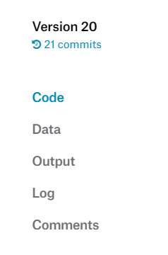

Kaggle上有免费供大家使用的GPU计算资源，本文教你如何使用它来训练自己的神经网络。

Kaggle是什么
Kaggle是一个数据建模和数据分析竞赛平台。企业和研究者可在其上发布数据，统计学者和数据挖掘专家可在其上进行竞赛以产生最好的模型。
在Kaggle，你可以：
参加竞赛赢取奖金。
Kaggle上会发布一些赛题，做的好会赢得奖金。下载数据集。
Kaggle上包含了众多的数据集供大家免费下载，常见的数据集都可以在上面找到。学习别人的代码。类似
GitHub，你可以在Kaggle上学习冠军的代码来强化数据科学技能。免费使用计算资源。
Kaggle的Kernels功能允许你在浏览器编程、并通过服务器的GPU来加速你的计算。讨论交流学习。
Kaggle上有论坛交流功能，允许你与相同的爱好者一起交流学习。学习
Python、ML、Pandas、DL等技能。Kaggle上提供了免费的微课给大家学习，供初学者快速入门学习。
本篇文章侧重点是第4条，教你如何将自己的代码丢到Kaggle上训练。
注意，Kaggle目前只支持Python和R两种编程语言。
Kernel硬件配置
GPU：Nvidia Tesla P100-PCIE-16GB 1.3285GHz
GPU连续使用时间：6h
CPU Frequency： 2.3GHz
RAM：14GB
Disk：5.2GB
使用教程
基本介绍
登陆
Kaggle官网，注册账号并登陆。在Kaggle注册账号是免费的。点击导航栏的
Kernels

- 点击页面上部的
New Kernel来创建一个新的Kernel。粗略地说Kernel就是一个代码的工程项目。

- 点击左边的
Script来创建一个脚本。这个脚本就是你项目运行的主要文件。

- 顶部的标题栏的功能。

- 侧边状态栏的主要功能。
Sessions显示资源占用状态，Versions显示版本管理，Draft Environment显示你上传数据（注意：上传后该区域只读，不能写），Settings显示设置（如GPU开关、包的管理）

- 底部状态栏功能。
用完Kernel建议点击类似电源键的按钮关闭Kernel哦（关闭后所有输出文件将会丢失）
- 代码输入窗口。它已预先帮你输入一些示例代码，可以删掉重写。
使用示例
我们以Tensorflow平台的YoloV3-Tiny模型在数据集VOC2007的训练为例，介绍如何使用Kaggle训练我们的模型，并保存结果，将模型下载到本地。
提示：Kaggle已经为我们准备好常用的环境了，无需我们从头搭建开发环境。一般直接用就好了。
文件准备
首先我们要在本地弄好相关文件，再上传到Kaggle上去。
本地的准备参考这篇：【AI实战】动手训练自己的目标检测模型（YOLO篇）
有关YOLO参考这篇：用YOLO实现目标检测
然后按照实际情况修改train.py的相关参数，例如将batch_size改成128，epochs改小一点等等。
注意训练时间不能超过6个小时，否则Kaggle会自动关闭你的Kernel。
并且Keras版的YOLO的标签文件与Darknet版的不同，标签文件要重新生成。然后执行：
cat 2007_train.txt 2007_val.txt > train.txt即我们使用验证集和训练集混合起来一起训练，最后替换下路径前缀。
但有以下几点要注意下：
上传后不能在线修改你上传的东西，只能删除该压缩包（删除方法见第三节：再次训练）后重新上传（如果数据量巨大，重新上传十分费时）。所以最好需要确保第一次上传的东西就没有问题，否则更改会比较繁琐。
上传时，建议是分别上传几样东西（分别压缩打包上传）：
- 模型的配置文件
- 训练的数据文件
- 模型
.h5文件
上传方式：点击右侧白色的侧边状态栏中的+ Add Data按钮，在弹出的窗口中，点击右上角的Upload，然后选择文件去上传（只能上传单个文件，这就是为什么叫你打包压缩的原因）。
上传后，Kaggle会自动帮你解压缩，点击右边的文件树，点选其中的一个文件，会在左侧弹出白色的文件管理弹窗，弹窗的上端会显示该文件的路径：
点击中间的那个蓝色的按钮你可以复制路径到剪切板中。
当你上传了多个压缩包或文件时，路径的命名规则一般是这样的：
- 对于上传了文件：
../input/数据集的名字/上传的文件名字 - 对于上传了压缩包：
../input/数据集的名字/压缩包的名字/压缩包底下的路径
其中上述的
图片路径的.txt文件不能单纯按照【AI实战】动手训练自己的目标检测模型（YOLO篇）来做，你要将路径替换成上述第二点描述的那样。因为你执行的主脚本文件并不是在你上传的东西里面，你需要使用类似../input/XXX/XXX的格式来调用你上传的东西。对于脚本中的文件路径也是如此，类似于上述的第三点来做。否则会提示会找不到你上传的文件。实际上有关路径的一切东西都要按照上述的路径规则来做，否则就找不到文件。
如果提示
import时找不到文件，这是因为你上传的包没有加入系统变量，那么你需要：import sys kaggle_path_prefix = "../input/keras-yolov3tiny-voc2007/keras-yolo3/" sys.path.append(kaggle_path_prefix)
这里请根据你的实际情况修改上述kaggle_path_prefix的值。
这里kaggle_path_prefix目录下需要包含那个你刚刚上传的压缩包里名叫yolo3的Python包的文件夹。
- 保存文件的路径请直接填写文件名，像这样：
model.save_weights('trained_weights_final.h5')这是因为input文件夹是只读的，且保存到其他地方去无法输出下载，你也找不到输出的文件。况且当Kernel关闭后你的一切东西就会丢失。
运行并提交
点击顶部标题栏亮起的蓝色Commit按钮，以运行全部代码并保存结果，最后它会保存你输出的文件。
如果允许的窗口不慎点没了，可以右侧的Versions中，点击：
重新弹出运行的窗口（除非你点了Cancel commit）。

运行完毕后，点击：

来打开Kernel页面。
如果你有输出文件，在左侧的：

点击Output就可以切换到输出的文件列表，然后就可以下载你输出的文件啦，选中你想要的模型下载即可。
如果运行出错，请点击上图所示的Log查看错误日志（有必要时点击Download Log按钮下载日志到本地），按照错误提示修复错误即可。
再次训练
只需将原本的模型文件数据集删除，然后再添加上传上去，再次Commit就好了。
删除数据集的步骤：
点击数据集旁边的那个红色的叉叉，将数据集从当前
Kernel移除点击自己的头像，进入
My Profile页面，然后点击Datasets
- 然后点击
Settings
- 最后点击
Delete Dataset并确认即可